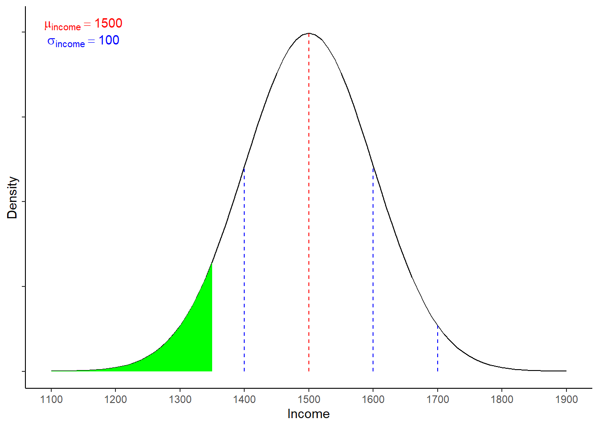
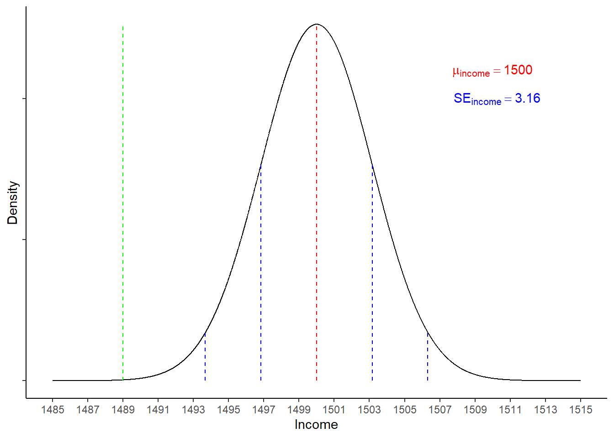

library(tidyverse)
library(haven)8 ISA 4: working with normal distributions II - the sampling distribution of means
8.1 R outcomes
After reading this chapter, you can:
- Understand the difference between a given variable’s distribution and the sampling distribution of means for that variable
- Answer questions about proportions/probabilities based on both types of distribution using z-formulae
- Use the
dplyr::mutatefunction to create new variables from existing values
8.2 Required packages
You will need the following additional packages:
dplyr(but we will simply install thetidyversecollection so that we also have the pipe operator -%>%- loaded)haven
8.3 Open up your project and a new script file
You created a R project for your ISA work in the first class, so open this now and also create a new R script (Ctrl\Cmd + Shift + n) so that you can save today’s work.
8.4 Recap: Z-transformations
Imagine we know that income per week (in euro) is normally distributed in the population of Dutch university students who graduated in the last year, such that the mean (\(\mu\)) income is 1,500 EUR, with an SD (\(\sigma\)) of 100.We might wonder: what proportion of the population of new Dutch graduates would have a weekly income of less than 1,350 EUR?

We can see the area of interest in the distribution above, in Figure 8.1. To calculate the proportion, we first need to convert the target value into a z-score, which transforms the value into standard deviation units. In this case:
\[ z = \frac{x-\mu}{\sigma} = \frac{1350-1500}{100} = -1.5 \] To work out the probability associated with a z-score of 2, we can supply the score to the R function, along with information about our distribution:
target_income<-1350
mean_income<-1500
sd_income<-100
pnorm(target_income ,mean = mean_income, sd = sd_income, lower.tail = TRUE)[1] 0.0668072# We set 'lower.tail = TRUE' because we want to return probabilities associated with a score *less* than 1,350, so the lower/left-tail values.This allows us to answer our question: there is a 6.68% chance of randomly selecting an individual with an income below 1,350 EUR per week from the population of new Dutch graduates
8.5 The Sampling Distribution (of Means)
Imagine (as before) that we know that income per week (in euro) is normally distributed in the population of Dutch university students who graduated in the last year (\(\mu_{income}= 1,500\), \(\sigma_{income}= 100\)). If we repeatedly draw samples of \(n\) = 1,000 from the population, then we might see \(\bar{x}_1=1,501.93\) , \(\bar{x}_2=1,497.62\) ,… and so on. Computing sample means from all possible samples of size \(n\) = 1,000 gives the sampling distribution of means (for \(n\) = 1,000).
The mean of the sampling distribution = \(\mu = 1,500\) and the standard deviation of sampling distribution is known as the Standard Error (SE). While the sampling distribution is purely theoretical (because we usually cannot collect all possible permutations of elements from our population), we can estimate the standard error of the sampling distribution of means with the formula:
\[ \sigma_{\bar{x}} = \frac{\sigma}{\sqrt{n}} \] Plugging in the values from our current example gives:
\[ \sigma_{\bar{x}} = \frac{100}{\sqrt{1000}} = 3.16 \]
We can now ask the question: what is the probability of drawing a sample (n = 1,000) from this population with a mean of less than 1,489 EUR?

We can follow exactly the same steps as we did when working above with (fictional) population values:
\[ z = \frac{x-\mu}{\frac{\sigma}{\sqrt{n}}} = \frac{1489-1500}{3.16} = -3.48 \]
target_income<-1489
mean_income<-1500
se_income<-3.16
pnorm(target_income ,mean = mean_income, sd = se_income, lower.tail = TRUE)[1] 0.0002497609# We set 'lower.tail = TRUE' because we want to return probabilities associated with a score *less* than 1,489, so the lower/left-tail values.Our answer, then, is: there is a 0.02% chance of randomly drawing a sample (n = 1,000) with a mean income of less than 1,489 EUR from this population (with \(\mu = 1,500\) & \(\sigma = 100\))
8.6 Computing new variables
Let’s load in the ESS11.sav dataset and examine three variables related to trust in political institutions:
trstprl- “Trust in country’s parliament”trstprt- “Trust in political parties”trstplt- “Trust in politicians”
ESS<-haven::read_sav("ESS11.sav")With the attributes function, we can look at a variable’s name label and labels which have been attached to particular values of the variable (where these have been set).
attributes(ESS$trstplt)$label # name[1] "Trust in politicians"attributes(ESS$trstplt)$labels # value labelsNo trust at all 1 2 3 4
0 1 2 3 4
5 6 7 8 9
5 6 7 8 9
Complete trust Refusal Don't know No answer
10 77 88 99 Above, we show only trstplt but trstprt and trstprl are coded in the same way (you can check this yourself to be sure). All have valid values running from 0 (“No trust at all”) to 10 (“Complete trust”), with three categories of “missing value” defined (77 = “Refusal”, 88 = “Don’t know”, 99 = “No answer”). It appears that higher scores on these variables reflect greater trust in the named institution, so we can use these to create an average “political trust” variable with the dplyr::mutate function. To finish, we will show the first six rows of values from our new variable alongside the original three to verify that the operation was performed correctly.
ESS <- ESS %>%
dplyr::filter(!is.na(trstprl) & !is.na(trstplt) & !is.na(trstprt)) %>%
dplyr::mutate(pol_trust = rowMeans(dplyr::select(.,trstprl,trstplt,trstprt)))
ESS %>% dplyr::select(trstprl,trstplt,trstprt,pol_trust) %>%
head()# A tibble: 6 × 4
trstprl trstplt trstprt pol_trust
<dbl+lbl> <dbl+lbl> <dbl+lbl> <dbl>
1 6 [6] 5 [5] 5 [5] 5.33
2 6 [6] 1 [1] 0 [No trust at all] 2.33
3 7 [7] 4 [4] 4 [4] 5
4 5 [5] 3 [3] 3 [3] 3.67
5 6 [6] 5 [5] 5 [5] 5.33
6 3 [3] 5 [5] 5 [5] 4.338.7 To do:
- add code comments to this chapter
8.8 Summary
In this chapter, we covered:
- Using z-transformations to make inferences related to the sampling distribution of means
- Computing new variables from existing data and adding these to an existing dataframe with
dplyr::mutate